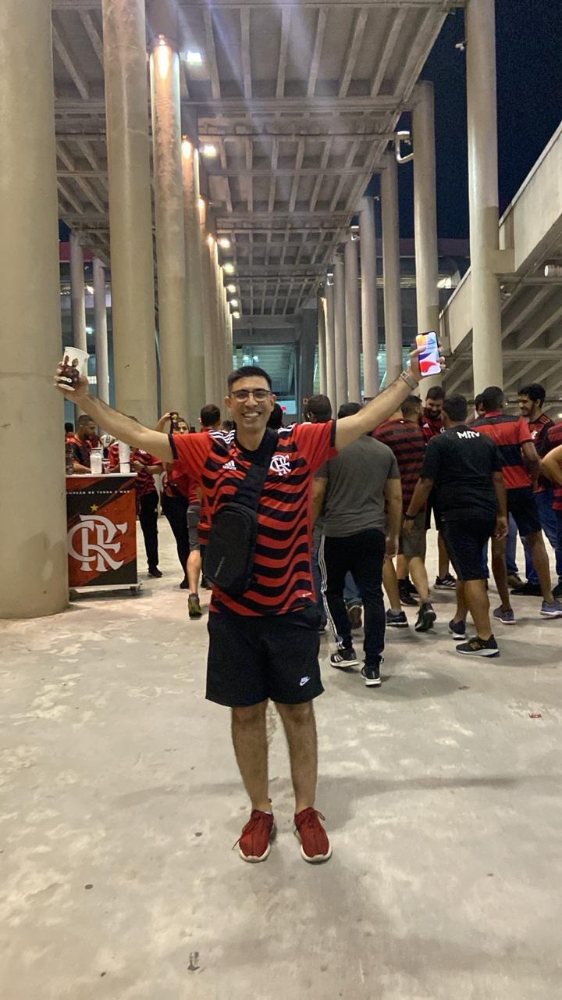

Quem manja mais?
3 pontos pelo placar exato; 1 pelo resultado correto. O palpite do campeão fica registrado à parte.
Bora palpitar!
Quem vai ser o campeão da Libertadores?
Palmeiras ou Estudiantes? Registre o campeão de cada participante. Essa escolha é independente do placar da final.
A final no futebol de botão
Palmeiras × Estudiantes · Prováveis escalações para 28/11/2026. Escolha o participante e toque em um jogador para substituí-lo por um reserva ou mudar sua posição. Suas alterações ficam salvas.
Prováveis escalações de referência
Apuradas em 27/11/2026 e sujeitas à confirmação oficial. Consulte estes nomes enquanto monta seu campinho pessoal.
A escalação inicial e o desenho tático são prévios. Ao editar, você cria a sua escalação. As opções de reservas são jogadores relacionados ou alternativas apuradas, e o banco oficial ainda pode mudar. Murilo e Piquerez eram dúvidas no treino do Palmeiras. No Estudiantes, Baltasar Rodríguez está suspenso e a equipe também pode usar cinco defensores.
Notícias dos clubes: preparação do Palmeiras · relacionados do Estudiantes.
Opções do Palmeiras: jogadores que viajaram · cortes previstos pela imprensa. Paulinho e Baltasar Rodríguez aparecem como indisponíveis para a final.
Os palpites, convidados e campinhos ficam neste navegador. Exporte uma cópia para guardar ou levar a outro aparelho.
Classificação do campeonato
Consultando a classificação…
Como jogar no Catimba
- Escolha o campeonato, a temporada e a rodada. A 38ª rodada já abre com os dez jogos.
- Preencha os placares do Carlinhos, do Tiba e dos convidados. Zero é um placar válido; deixe em branco se ainda não decidiu.
- Na Libertadores, dê também o palpite do campeão: Palmeiras ou Estudiantes.
- Nos campinhos da final, escolha seu nome e toque em um jogador. Você pode colocar um reserva, mudar o setor ou trocar sua posição com outro titular.
- Abra “Nossos campinhos”, escolha o participante e monte a escalação com onze nomes.
- Depois do jogo, preencha o resultado para calcular os pontos. Exporte seu histórico para ter uma cópia.
Na final, o placar vale pelos 90 minutos e acréscimos. A escolha do campeão considera também eventual prorrogação e pênaltis.